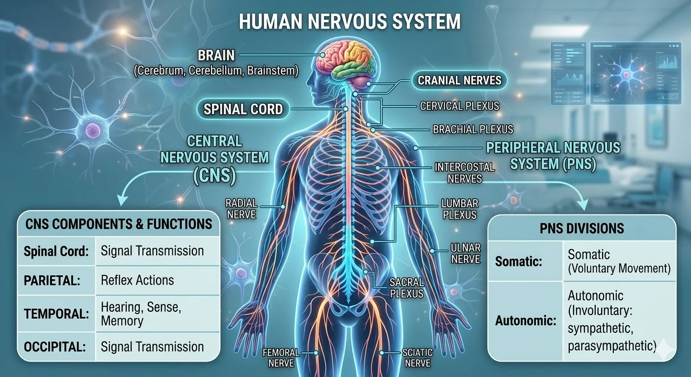
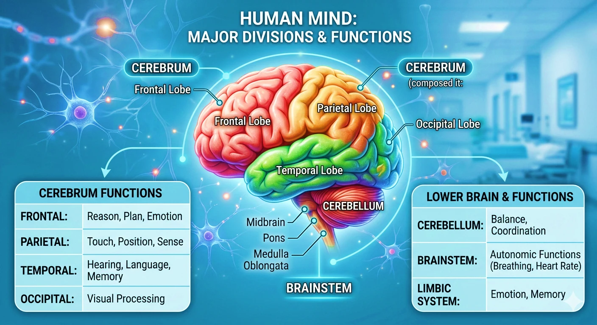
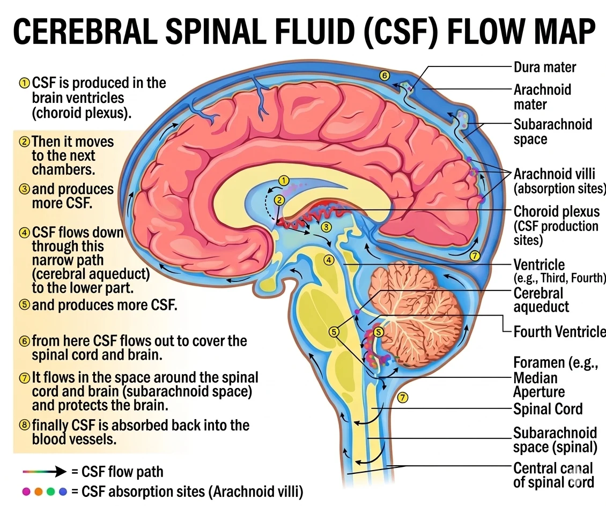
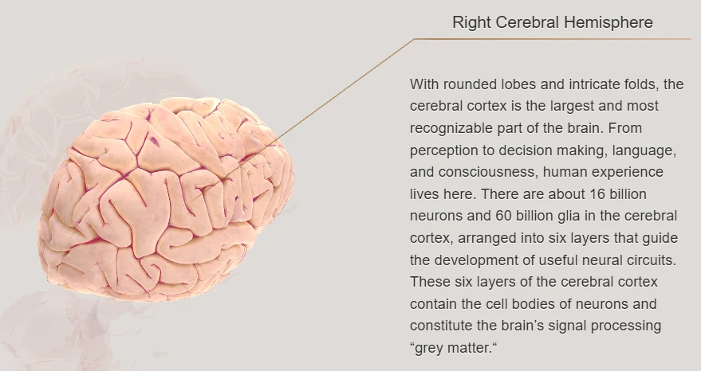
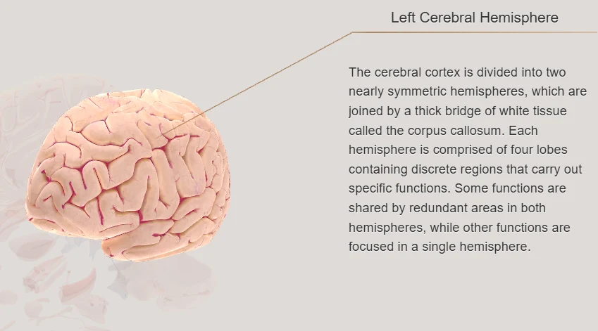
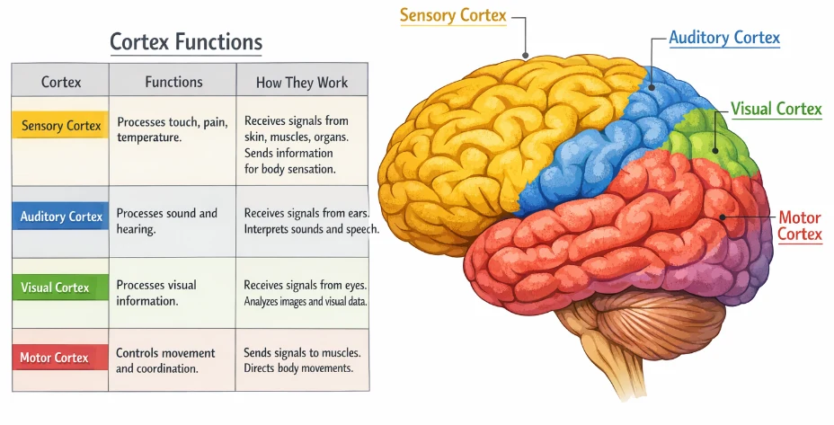
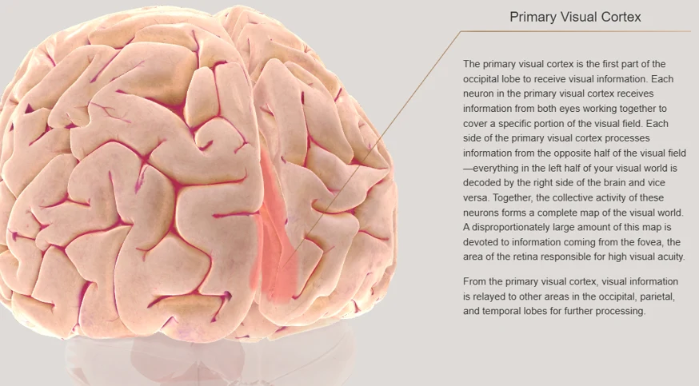
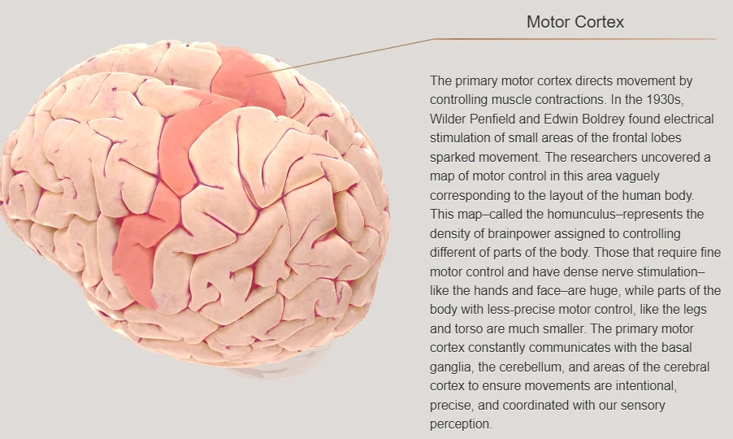
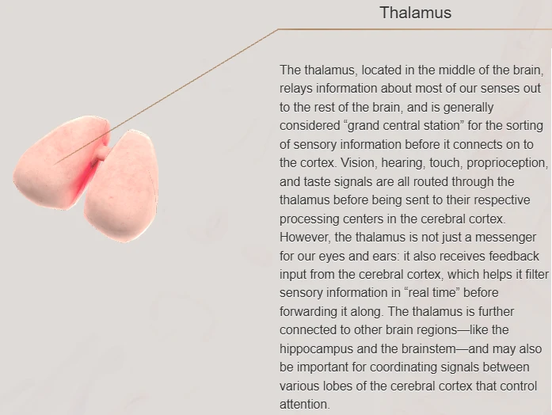
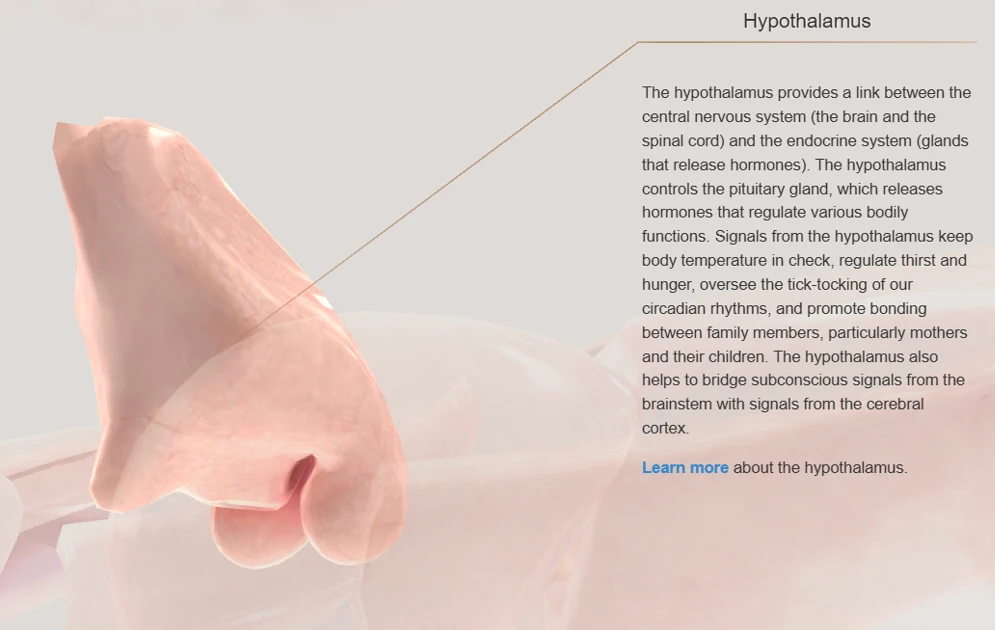

Chapter Overview
Key skills you will develop by the end of Chapter 2: Human Nervous System.
General Science: Human Nervous System
Complete chapter notes with all diagrams, neuron structure, reflex arc and vocabulary: PDF format
Please note: The content on this page is a concise preview of the chapter. The complete notes, including all detailed explanations, diagrams, worked examples, and exam-style questions, are available in the PDF. We strongly encourage you to download the PDF for the full learning material.
Chapter Diagrams
High-quality illustrated diagrams from W.H. Academy Class 8 Science notes.










Nervous System and Its Divisions
Understanding coordination, the CNS, and the PNS.
Coordination and the Nervous System
1. What is coordination? How does the nervous system maintain it?
2. What is the Central Nervous System (CNS)? What does it consist of?
3. What is the Peripheral Nervous System (PNS)? How does it differ from the CNS?
CNS (brain + spinal cord) = the control center.
PNS = the communication network that carries messages to and from the CNS.
Together, the brain, spinal cord, nerves, receptors, and effectors form the complete nervous system.
4. What is the spinal cord and what is its role?
The Human Brain: Structure and Functions
Forebrain, Midbrain and Hindbrain — structure, location and function.
Brain Overview and Forebrain
1. What are the three basic parts of the human brain?
The brain is located inside the skull (cranium), protected by the hard skull bone and cerebrospinal fluid. It is a wrinkled, greyish organ — the wrinkles increase its surface area to allow more brain cells to fit inside.
2. What is the forebrain? What are its parts?
3. What is the cerebrum? What are its functions?
The cerebrum is divided into two halves called cerebral hemispheres (left and right). The left hemisphere controls the right side of the body and handles language, speech, mathematics and logical thinking. The right hemisphere controls the left side of the body and handles creativity, artistic ability, music and visual-spatial skills.
4. What is the thalamus? Why is it called a relay station?
5. What is the hypothalamus? Why is it called the body's thermostat?
If the body becomes too hot → hypothalamus triggers sweating to cool down.
If the body becomes too cold → hypothalamus triggers shivering to generate heat.
Midbrain and Hindbrain
1. What is the midbrain? Why is it called a bridge?
Upward: From hindbrain to forebrain, carrying sensory information.
Downward: From forebrain to hindbrain, carrying motor commands for movement.
2. What is the hindbrain? Name its three parts.
3. What is the cerebellum? What does it control?
After repeated practice (e.g. riding a bicycle, swimming), the cerebellum stores the pattern and executes these movements automatically without conscious effort.
4. What is the medulla? Why is it critical for survival?
Peristalsis is the rhythmic contraction and relaxation of muscles in the digestive tract that pushes food forward. It is involuntary and controlled by the autonomic nervous system.
If the medulla stops working, breathing stops, the heart ceases to beat — it is instantly life-threatening.
5. What is the pituitary gland? Why is it called the master gland?
It is called the master gland because it controls other glands in the body.
Neurons: Structure and Types
Anatomy of a nerve cell, sensory and motor neurons, and myelin insulation.
Structure of a Neuron
1. What is a neuron? What are its main parts?
1. Cell body: Contains the nucleus; controls all cell activities.
2. Dendrites: Short, branching extensions that receive signals TOWARDS the cell body.
3. Axon: Long, thin extension that carries signals AWAY from the cell body.
4. Myelin sheath: Fatty insulation wrapped around the axon (like plastic around a wire) — speeds up transmission and prevents signal leakage.
5. Axon terminals: End branches where signals pass to the next neuron.
2. What are sensory and motor neurons? How do they differ?
Motor neuron: Carries impulses FROM the CNS TOWARDS muscles and glands (effectors), causing them to respond. It COMMANDS the body to act.
3. What are receptors and effectors? How do they differ?
Effectors are the body parts that conduct the response to a stimulus. In multicellular organisms, the effectors are muscles — they either contract or relax to produce movement.
Simply: Receptors DETECT; Effectors ACT.
Voluntary Actions and Reflex Actions
Comparing conscious and automatic responses — including the reflex arc.
Voluntary vs Reflex
1. What are voluntary actions? Give two examples.
Examples: writing, speaking, kicking a ball, picking up a glass.
2. What are reflex actions? Why are they important for survival?
Example: pulling your hand away from a hot object instantly.
They are faster than voluntary actions because the signal does NOT travel to the brain for processing — the spinal cord coordinates the response directly. This speed is critical in emergencies to protect the body from injury.
3. What is a reflex arc? Describe its complete pathway.
4. Give five examples of stimulus and their reflex responses.
Insect touches eyelid → Eye blinks.
Food enters windpipe → Coughing (to clear the airway).
Hand touches electric wire → Hand pulled away instantly.
Smell of food when hungry → Saliva produced.
Body gets too hot → Sweating begins.
Body gets too cold → Shivering begins.
The Synapse and Nerve Damage
How neurons communicate, the role of neurotransmitters, and effects of nerve damage.
Synapse: Passing Messages
1. What is a synapse? How does it work?
When a signal reaches the axon terminal, it triggers the release of neurotransmitters (chemical messengers) into the synapse. These chemicals cross the gap and bind to receptors on the next neuron, restarting the electrical signal.
2. What are the effects of nerve damage? How can brain health be maintained?
To maintain a healthy brain: Regular exercise (improves blood flow to the brain), a balanced diet (provides nutrients for nerve function), adequate sleep (allows the brain to repair and consolidate memory), avoiding alcohol and drugs (which damage neurons), and mental stimulation through reading and learning.
Chapter 2 Vocabulary
Important terms you must know: learn these definitions for exam questions.
| Term | Definition |
|---|---|
| Nervous system | A network of billions of neurons that carries signals to control and coordinate all body activities |
| CNS | Central Nervous System — the brain and spinal cord; the body's control center |
| PNS | Peripheral Nervous System — all nerves connecting the CNS to receptors and effectors in the body |
| Cerebrum | The largest part of the brain; controls thinking, memory, reasoning, emotions and voluntary movement |
| Thalamus | Relay station of the brain; forwards sensory signals from sense organs to the cerebrum |
| Hypothalamus | The body's thermostat; maintains body temperature at 37°C through sweating and shivering |
| Cerebellum | Controls balance and coordinated, learned movements (e.g. cycling, swimming) |
| Medulla | Controls involuntary vital functions: breathing, heartbeat and peristalsis |
| Pituitary gland | The master gland; produces hormones regulating water, blood sugar and growth |
| Neuron | A nerve cell; the basic working unit of the nervous system |
| Dendrites | Short branching extensions of a neuron that receive incoming signals towards the cell body |
| Axon | Long extension of a neuron that carries signals away from the cell body |
| Myelin sheath | Fatty insulation around the axon that speeds up signal transmission and prevents leakage |
| Sensory neuron | Carries signals FROM receptors TO the CNS (brain and spinal cord) |
| Motor neuron | Carries signals FROM the CNS TO muscles and glands (effectors) |
| Receptor | A specialized cell that detects stimuli and converts them into nerve signals |
| Effector | Body part (muscle or gland) that produces the response to a stimulus |
| Voluntary action | A conscious, deliberate action controlled by the cerebrum (e.g. writing) |
| Reflex action | An automatic, unconscious response coordinated by the spinal cord without brain involvement |
| Reflex arc | The nerve pathway of a reflex: receptor → sensory neuron → spinal cord → motor neuron → effector |
| Synapse | The tiny gap between two neurons where signals are passed using chemical neurotransmitters |
| Peristalsis | Wave-like muscle contractions in the digestive tract that push food forward |
| Neurotransmitter | A chemical messenger released at a synapse to carry a signal to the next neuron |
Test Yourself: Chapter 2 Quiz
Chapter-wise MCQs aligned with APSACS and FBISE syllabus. No login required. Instant results.
Start Quiz NowWant Live Explanation of Human Nervous System?
Join W.H. Academy: Live tutoring, recorded lectures and full chapter solutions for APSACS and FBISE students in Rawalpindi and online across Pakistan.